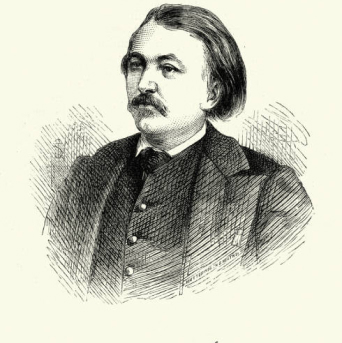

A vida de Gustave Doré:
O grande ilustrador e gravurista Paul Gustave Doré nasceu em Estrasburgo, na França no dia 6 de janeiro de 1832, em uma família de artistas. O pintor já mostrava seu talento para as artes desde muito novo, começando a desenhar logo aos 5 anos de idade. Aos 15 anos, Doré começou a trabalhar como caricaturista para jornais franceses, como o “Journal pour rire”, de Charles Philipon. Sua habilidade logo chamou a atenção do povo a sua volta sendo considerado o mais talentoso pintor de sua geração! Rapidamente o artista ganhou reconhecimento internacional e fez enorme sucesso na ilustração de renomados clássicos como “Dom Quixote”, “A Divina Comédia” e a biblia. Sua fama é fruto da forma única que tinha de traduzir sentimento e a essência em suas obras.
Fora suas contribuições na ilustração, Doré também era um pintor talentoso e inclusive expunha suas obras em salões e galerias, além de algumas esculturas realizadas pelo mesmo. Gustave fez extensas viagens pela Europa, chegando a passar pelos Estados Unidos e documentou tudo em suas obras e durante uma viagem a Londres que produziu as diversas ilustrações do seu livro “London: a pilgrimage” em conjunto com William Blanchard. O artista continuou sua carreira até o dia de sua morte em 23 de janeiro de 1883 aos 51 anos decorrente de uma doença cardíaca e, apesar do sucesso, morreu em certa obscuridade. Mas suas obras manteram seu legado influenciando diversos artistas em diferentes épocas, seu trabalho permanece intacto e altamente valorizado, constantemente referenciado em contextos literários e registros históricos.
A vida de William Blanchard Jerrold:
William Blanchard Jerrold nasceu em Londres em 23 de dezembro de 1826, filho do dramaturgo e escritor britânico Douglar William Jerrold. Em sua vida William seguiu os passos de seu pai e se tornou escritor, jornalista e editor, contribuiu para várias publicações da época, incluindo o "Weekly Times" e o "Lloyd's Weekly Newspaper".
O autor é mais conhecido por suas biografias, incluindo uma de seu pai que se chamava “The Life of Douglas Jerrold” de 1859 e também escreveu obras de ficção e não ficção ao longo da carreira. Jerrold também esteve envolvido emquestões sociais e políticas de sua época, defendeu causas progressistas, incluindo os direitos dos trabalhadores e a reforma social.
William faleceu no dia 10 de março de 1884 e, embora não seja tão famoso quanto seu pai, ele contribuiu muito para a literatura da sua época, sendo até hoje citado em materiais históricos do século XIX.